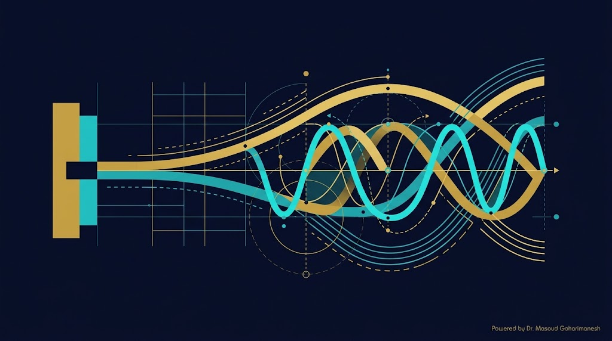
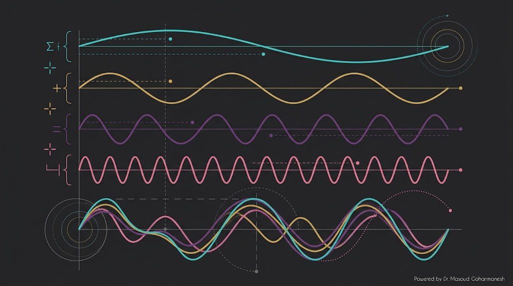
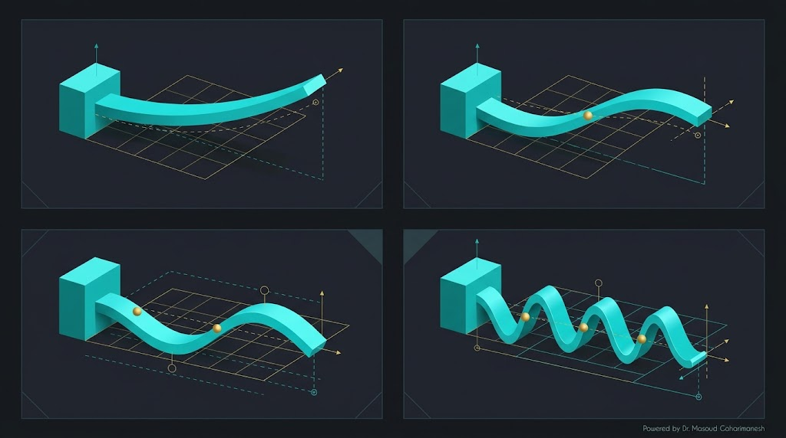
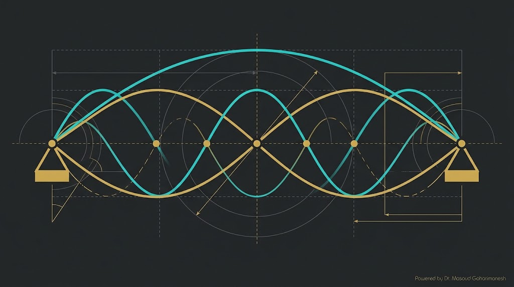
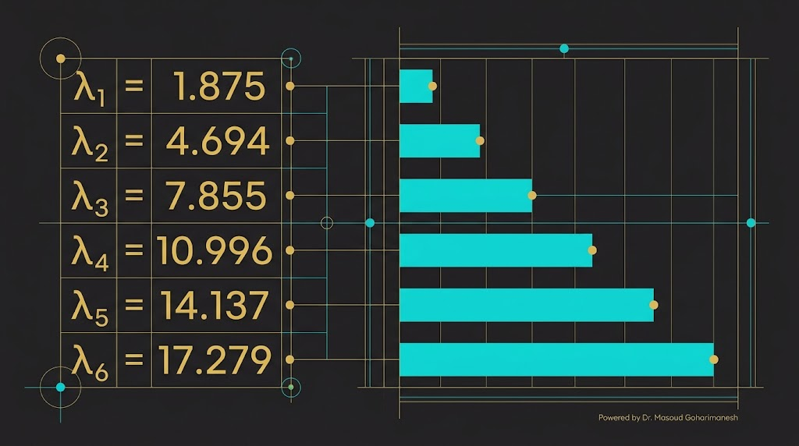
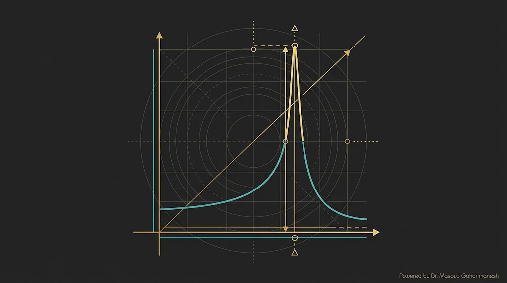
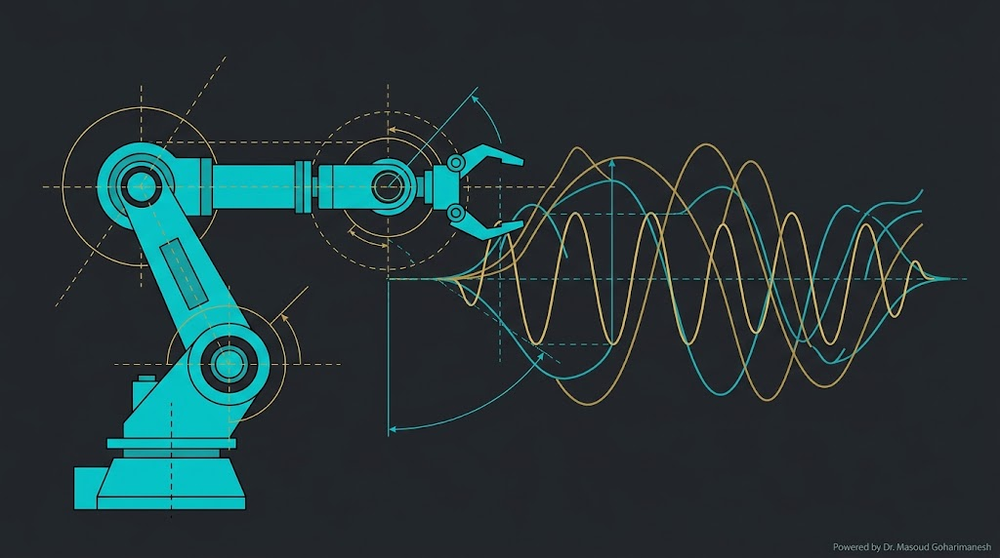
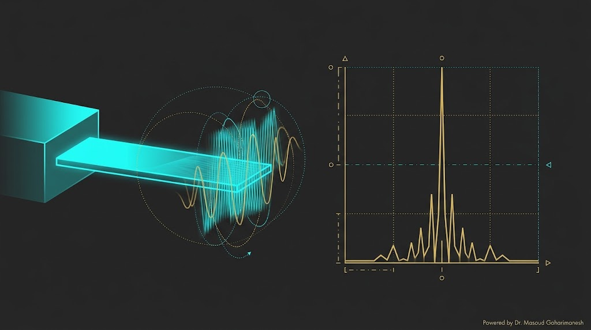
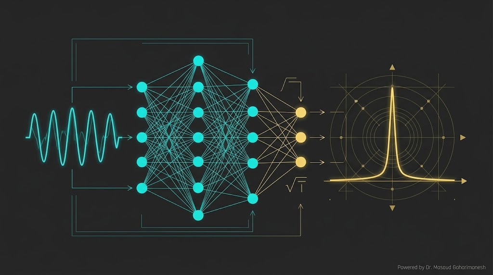

دکتر مسعود گوهری منش
دانشیار گروه مهندسی مکانیک — دانشگاه تربت حیدریه

ریاضیات مهندسی پیشرفته — جلسه ۱۰
دکتر مسعود گوهری منش
دانشیار گروه مهندسی مکانیک — دانشگاه تربت حیدریه
اگر یک نیروی خارجی با فرکانس نزدیک به یکی از فرکانسهای طبیعی به تیر وارد شود، رزونانس رخ میدهد و دامنه ارتعاش بهشدت بزرگ میشود — که میتواند منجر به تخریب سازه شود. این پدیده در طراحی بازوی ربات، پل، و نانو رزوناتور باید در نظر گرفته شود.
با افزودن نیروی اینرسی به معادله استاتیک تیر (اصل دالامبر):
برای PDE مرتبه ۲ در زمان:
| نوع | شرایط |
|---|---|
| تکیهگاه ساده | $w = 0, \ w'' = 0$ |
| گیردار | $w = 0, \ w' = 0$ |
| آزاد | $w'' = 0, \ w''' = 0$ |

با جایگذاری در PDE و تقسیم دو طرف:
حل عمومی مرتبه ۴:
$C_1, C_2, C_3, C_4$ از شرایط مرزی تعیین میشوند.
با اعمال ۴ شرط مرزی، یک دستگاه ۴ معادلهای برای $C_1, C_2, C_3, C_4$ به دست میآید. برای جواب غیربدیهی، دترمینان ضرایب باید صفر باشد:
در $x=0$ گیردار، در $x=L$ آزاد:
که $\lambda = \beta L$ میباشد.
در دو سر: $w = 0$ و $w'' = 0$:
$n = 1, 2, 3, \ldots$
$\lambda_1 = 4.730$
$\lambda_1 = 3.927$

| حالت | $\lambda_n = \beta_n L$ | $\lambda_n^2$ |
|---|---|---|
| ۱ | 1.8751 | 3.5160 |
| ۲ | 4.6941 | 22.0345 |
| ۳ | 7.8548 | 61.6972 |
| ۴ | 10.9956 | 120.9035 |
| ۵ | 14.1372 | 199.8600 |
| ۶ | 17.2788 | 298.5555 |
برای حالت اول: $\omega_1 = \frac{3.5160}{L^2} \sqrt{\frac{EI}{\rho A}}$

برای تیر تکیهگاه ساده، شکل مودها دقیقاً سینوسی هستند:
فرکانسهای طبیعی:
۱ نیمموج
$\lambda_1 = \pi$
۲ نیمموج
$\lambda_2 = 2\pi$
۳ نیمموج
$\lambda_3 = 3\pi$
مود مورد نظر را انتخاب کنید و انیمیشن ارتعاش را ببینید.
در تیر یکسر گیردار:
شکل مودها نسبت به هم متعامد هستند:
این خاصیت اجازه میدهد جواب کلی را بهصورت مجموع مودها بنویسیم و ضرایب را جداگانه محاسبه کنیم.

| شرایط مرزی | λ₁ | λ₂ | λ₃ | λ₄ |
|---|---|---|---|---|
| تکیهگاه ساده | π | 2π | 3π | 4π |
| یکسر گیردار | 1.875 | 4.694 | 7.855 | 10.996 |
| دو سر گیردار | 4.730 | 7.853 | 10.996 | 14.137 |
| گیردار-ساده | 3.927 | 7.069 | 10.210 | 13.352 |

با نیروی هارمونیک خارجی $F(x, t) = F_0(x) \cos(\Omega t)$:
جواب شامل دو بخش است:
وقتی فرکانس نیرو $\Omega$ به یکی از فرکانسهای طبیعی $\omega_n$ نزدیک شود، دامنه بهشدت بزرگ میشود:
در سیستمهای واقعی، میرایی باعث محدود شدن دامنه میشود:
فرکانس نیرو و میرایی را تغییر دهید و منحنی پاسخ را ببینید.

بازوی رباتیک بهعنوان تیر یکسر گیردار:
مثال عددی: بازوی آلومینیومی با $L = 0.5$ m، مقطع ۵۰×۲۰ mm: $f_1 \approx 37$ Hz → پهنای باند کنترل باید کمتر از این باشد.

اگر جرم کوچکی $\Delta m$ روی نانو رزوناتور قرار گیرد، فرکانس تغییر میکند:
این اساس کار سنسورهای جرمی در مقیاس نانو است.
% === محاسبه فرکانسهای طبیعی تیر === clear; clc; close all; % پارامترها L = 0.5; % طول (m) b = 0.05; % عرض (m) h = 0.02; % ارتفاع (m) E = 70e9; % مدول یانگ (Pa) — آلومینیوم rho = 2700; % چگالی (kg/m³) % ممان اینرسی و سطح I = b*h^3/12; A = b*h; % === تیر یکسر گیردار === lambda = [1.8751, 4.6941, 7.8548, 10.9956, 14.1372]; fprintf('=== تیر یکسر گیردار ===\n'); for n = 1:length(lambda) omega = lambda(n)^2 / L^2 * sqrt(E*I/(rho*A)); f = omega / (2*pi); fprintf('مود %d: ω = %.2f rad/s, f = %.2f Hz\n', n, omega, f); end % === تیر ساده === fprintf('\n=== تیر تکیهگاه ساده ===\n'); for n = 1:5 lambda_n = n * pi; omega = lambda_n^2 / L^2 * sqrt(E*I/(rho*A)); f = omega / (2*pi); fprintf('مود %d: ω = %.2f rad/s, f = %.2f Hz\n', n, omega, f); end
# === محاسبه فرکانسهای طبیعی تیر === import numpy as np # پارامترها L = 0.5 # طول (m) b = 0.05 # عرض (m) h = 0.02 # ارتفاع (m) E = 70e9 # مدول یانگ (Pa) rho = 2700 # چگالی (kg/m³) # ممان اینرسی و سطح I = b*h**3/12 A = b*h # تیر یکسر گیردار lambda_vals = [1.8751, 4.6941, 7.8548, 10.9956, 14.1372] print('=== تیر یکسر گیردار ===') for n, lam in enumerate(lambda_vals, 1): omega = lam**2 / L**2 * np.sqrt(E*I/(rho*A)) f = omega / (2*np.pi) print(f'مود {n}: ω = {omega:.2f} rad/s, f = {f:.2f} Hz') # تیر ساده print('\n=== تیر تکیهگاه ساده ===') for n in range(1, 6): lam = n * np.pi omega = lam**2 / L**2 * np.sqrt(E*I/(rho*A)) f = omega / (2*np.pi) print(f'مود {n}: ω = {omega:.2f} rad/s, f = {f:.2f} Hz')

PINN میتواند از دادههای ارتعاش، فرکانس طبیعی را مستقیماً تخمین بزند:
پارامتر $\omega$ (فرکانس) بهعنوان متغیر قابل آموزش در شبکه لحاظ میشود.
$\omega$ معلوم، پاسخ ارتعاش را پیشبینی کن.
$\omega$ نامعلوم، از دادههای ارتعاش تخمین بزن.
ارسال تمرینها:
m.goharimanesh@gmail.com
Subject الزامی:
[Advanced Engineering Mathematics] HW10 - نام و نام خانوادگی - شماره دانشجویی
$\rho A w_{tt} + EI w_{xxxx} = 0$
$w = W(x) T(t)$
$\omega_n = \frac{\lambda_n^2}{L^2} \sqrt{EI/\rho A}$
شکلهای متعامد
$\Omega \to \omega_n$
تخمین فرکانس
جلسه ۱۱ — نانو انبرک و نیروهای بینمولکولی